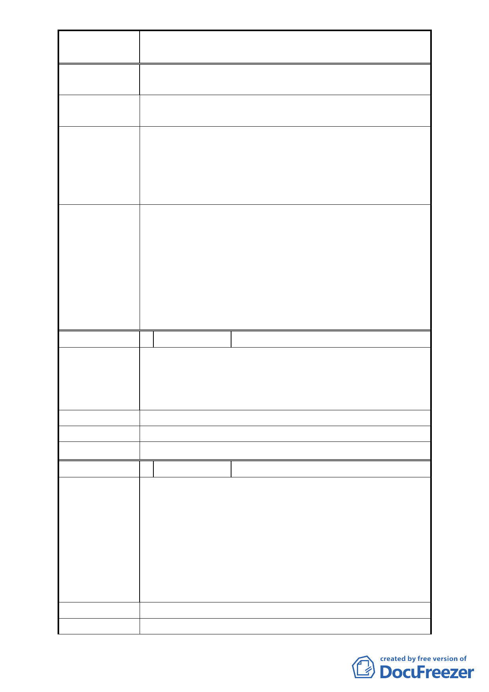

案
名
「擬定北投士林科技園區（區段徵收範圍）細部
計畫案」內市民住宅區等 4 處調整案
5. 洲美里抽建民里抽。
建議處理意見
1. 公設可縮小，需有四房。
2. 建民里抽原住地，免家族被分裂。
1. 建蔽率及容積率係經本市都市計畫委員會充分考量各
項因素後審議通過，且非屬本次計畫調整內容。
市 府 回 應 意 見 2. 市民住宅設計公設比例、房型、抽籤資格等問題，無
涉及本次計畫內容，請土地開發總隊納入區段徵收作
業內參考辦理。
有關民眾陳情內容涉及區段徵收住宅配地可否分區
抽籤分配發回，市民住宅設計公設比例、房型型式等，與
本次所提調整4個方案內容無關，會後請土地開發總隊在
符合土地徵收相關法令規定之程序下協助地區居民尋求
委 員 會 議 決 議 可行之方案，並向地區居民妥於說明區段徵收之權利義務
關係，避免民眾疑慮。至於所提分配後之容積率、建蔽率
太低是否可調整一項，對本次所提調整4個方案內容並無
影響，後續由市府另案研議。
編 號 2 陳情人 陳瓊萍
1. 抵費地之建蔽率及容積率太低（提高至 250%以上）。
陳
情
理
由
2. 市民住宅面積至少需實際使用面積 35 坪以上。
3. 住宅配售需分別建民里抽建民里，洲美里抽洲美里，
才不會分裂家族。
建議處理意見 同上。
市 府 回 應 意 見 同編號 1。
委 員 會 議 決 議 同編號 1。
編 號 3 陳情人 陳瓊姿
1. 政府太過份，建蔽率與容積率這麼低，徵收我們的土
地反而比都市更新那種沒被徵收土地的住宅獎勵更不
如，真沒天理。請務必將抵費地提高容積與建蔽率。
陳
情
理
由
2. 當初已討論過市民住宅是建民里抽建民里、洲美里抽
洲美里，為何現在又反悔，我們希望住自己家鄉，請
不要再亂改。
3. 市民住宅若只能單一規格，請至少多加 3-4 坪，變成
至少四房。
建議處理意見
市 府 回 應 意 見 同編號 1。
- 13 -